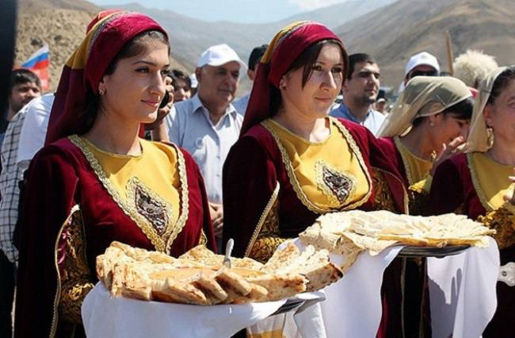
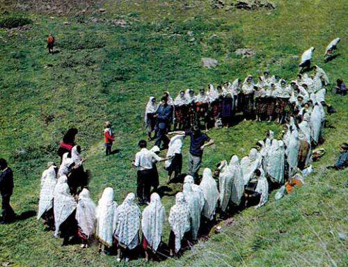

|

Гостеприимство — одна из главных традиций даргинского народа
|
|
Даргинские традиции уважения к старшим и обычаи гостеприимства
Уважение к возрасту – одна из главных добродетелей, почитаемых даргинцами. Старшему всегда уступят место. Когда он говорит, молодежь слушает стоя. За столом его блюдо первым наполняется едой. Невнимание к старости непростительно, оно серьезно осуждается обществом.
Не менее трепетно, чем к старшим, относятся в даргинских семьях и к гостям.
У даргинцев, как, впрочем, и во всем Дагестане, да и на Кавказе в целом, принято быть готовыми к тому, что в следующую минуту на пороге появится путник, которого нужно принять со всеми почестями. Расул Гамзатов в лирической повести «Мой Дагестан» упоминает, что горцы ждут гостя буквально ежечасно, и поэтому его приход не способен застать врасплох, а даже самый маленький гость всегда почетнее самого старшего хозяина. И не имеет значения ни национальность пришедшего, ни его вера, ни его социальный статус.
Для гостя в доме неизменно обеспечивается идеальный порядок и лучшее место. Поэтому у даргинцев всегда есть своеобразный неприкосновенный запас. Даже маленькие дети знают об этом и, например, обнаруживая конфеты, всегда интересуются у родителей, а не для гостей ли приберегли сладости. При чужих в доме не принято суетиться, прибираться, чрезмерно хлопотать, все совершается чинно и неторопливо: гость должен пребывать в состоянии абсолютного покоя.
|
|

Семейные и обрядовые традиции даргинцев
|
|
Семейные традиции и обычаи даргинцев
Для даргинской семьи привычен патриархальный уклад, подразумевающий главенство старших над младшими, мужчин над женщинами. Любой неправедный поступок даргинца ложится позором на всю его семью, весь его род. Поэтому каждый стремится неуклонно следовать этическому кодексу, чьи правила передаются из поколения в поколение. Благородство и трудолюбие, честность и смелость, достоинство и благочестие – вот важнейшие качества, присущие даргинцам.
Свадебные традиции даргинцев типичны для большинства кавказских народностей. Обряды сватовства и получения согласия на женитьбу, обручение и пребывание невесты в «другом» доме, ввод новобрачной в общую комнату и первый выход к роднику за водой – все эти этапы создания новой семьи проходят и даргинские юноши, и девушки.
Дети в даргинских семьях – величайшая ценность. Пожелание бездетности – еще одно суровое проклятие, чаще, правда, используемое женщинами. Имена детям принято давать в честь пророков или чтимых предков, уже умерших родственников или уважаемых в семье людей. И каждый знает, что он должен соответствовать данному при рождении имени. Характерное благопожелание даргинцев: «Будь похожим на того, чьим именем тебя нарекли!»
Чтобы вырастить достойных членов общества, с самого раннего возраста ребенка приобщают к взрослым занятиям. Так, мальчики усваивают, что их призвание – быть воинами, а девочки на деле готовятся стать умелыми хозяйками и любящими матерями. И вполне закономерно, что важное место среди даргинских обычаев занимает празднование совершеннолетия. Юноша получает свой кинжал, а девушка – бабушкино «взрослое» украшение.
Многочисленные традиции даргинцев отражены и в народных празднествах. Привычная для горцев сельскохозяйственная деятельность сопровождалась старинными обрядами, восходящими к магическим верованиям. Так, в праздник первой борозды, знаменующий начало пахоты, обязательно выбирали главного пахаря, его одевали в символизирующую богатый урожай вывернутую наизнанку шубу и во избежание засухи поливали водой. А в сороковой день весны жители сел обязательно устраивали торжественное шествие к роднику, за водой от сглаза. Не менее любим у даргинцев и праздник урожая, с неизменной совместной трапезой, танцами и играми.
|
|